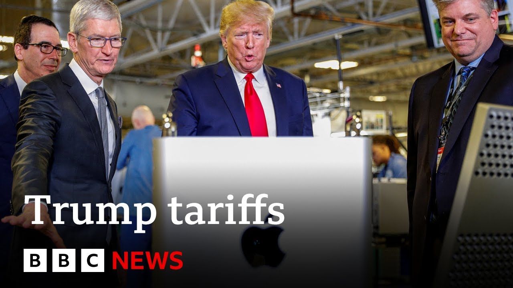

【美国总统特朗普威胁对欧盟征收50%关税，对iPhone征收25%关税 | BBC新闻】
Summary: President Trump proposes 50% tariffs on EU imports and 25% on iPhones, escalating global trade tensions ahead of June 1st, while markets react uncertainly.
摘要： 特朗普总统提议对欧盟进口商品征收50%关税，对iPhone征收25%关税，加剧了6月1日前的全球贸易紧张局势，市场反应不确定。

⏱️ Estimated Reading Time: 14 min
Hello and welcome to business today.
大家好，欢迎收看今日商业。
Uh we'll be live in New York this hour where we're watching the markets because President Trump has said he is recommending a new 50% tariff on all imports from the European Union dramatically raising the tensions in his global trade war.
我们将在纽约进行直播，关注市场动态，因为特朗普总统表示他建议对欧盟所有进口商品征收50%关税，大幅加剧了全球贸易战的紧张局势。
That came just a short time ago via Truth Social, his own social media network.
这一消息不久前通过他的社交媒体平台Truth Social发布。
And it comes despite a recent pause on tariffs for 90 days.
尽管最近宣布了90天的关税暂停期。
We're still well within that window.
我们仍处于这一窗口期内。
Lamenting on True Social that negotiations with the EU are going nowhere.
他在Truth Social上抱怨与欧盟的谈判毫无进展。
The US president pledged to bring that new tariff starting on June 1st.
美国总统承诺从6月1日起实施新关税。
That is just 9 days from now.
距离现在仅剩9天。
President also threatened to impose a 25% import tax on Apple iPhones not manufactured in America.
总统还威胁对非美国制造的苹果iPhone征收25%进口税。
So, let's get some reaction.
让我们听听一些反应。
We can speak to the trade expert from the Center for European Reform.
我们可以与欧洲改革中心的贸易专家交谈。
He's frustrated.
他感到沮丧。
It's taking too long with the European Union, but it is more difficult negotiating with 27 countries.
与欧盟的谈判耗时太久，但与27个国家谈判更加困难。
It really is.
确实如此。
And this has been a long-standing issue.
这是一个长期存在的问题。
The EU has not been willing to to budge.
欧盟一直不愿让步。
The EU is dedicated to the global trade order, the the predictable rules that we've had.
欧盟致力于全球贸易秩序，即我们一直遵循的可预测规则。
And for them, it's very hard to make the sort of quick and dirty deal that the UK made, for instance.
对他们来说，很难达成像英国那样的快速而草率的协议。
uh they don't they the UK the EU cannot accept this 10% tariff um general tariff and then 25% on on cars.
欧盟无法接受10%的普遍关税和25%的汽车关税。
So it's it's much harder to reach a compromise with the EU than it was with the UK for instance.
因此，与欧盟达成妥协比与英国达成妥协要困难得多。
What do you make of the timing?
你对这一时机有何看法？
Because there is a phone call due in the next few hours between Mariskovich, the European trade negotiator and his American counterpart.
因为欧洲贸易谈判代表马里斯科维奇和美国同行将在几小时后通话。
Is this time to influence that?
这是否是为了影响谈判？
I think it is.
我认为是的。
I think we have to keep in mind that at this point this is a threat.
我们必须记住，目前这只是一个威胁。
It's not an announcement.
这不是正式公告。
There's no executive order at this point.
目前没有行政命令。
There there is nothing coming on June 1st.
6月1日不会有任何行动。
It's just a threat and it is a way to negot to increase leverage in advance of negotiations in advance of trade talks.
这只是一种威胁，是为了在贸易谈判前增加筹码。
But the fact of the matter is the EU is not going to uh to budge based on this.
但事实是，欧盟不会因此让步。
They're going to to carry on, stay calm, carry on, stick to their positions.
他们会继续坚持，保持冷静，坚守立场。
uh and it will be a very difficult discussion this afternoon.
今天下午的讨论将非常艰难。
A lot of the car companies here in Europe have revised their forecasts.
欧洲许多汽车公司已经修正了预测。
They can't give too much detail on what they expect in the next year because this changes from day to day and and and this announcement was a very good example of that.
他们无法详细说明明年的预期，因为情况每天都在变化，而这一声明就是一个很好的例子。
Yeah, there was for for a while there was this perception that you know with this 90-day pause that there would be that Trump was backing off that we would have have a bit of quiet and stability.
是的，有一段时间人们认为，随着90天的暂停，特朗普会退缩，我们会有一段平静和稳定。
This shows that it's not at all the case and it's not just about the E EU.
这表明情况并非如此，而且不仅涉及欧盟。
This does not bode well for the US China negotiations either or or indeed for any of the other negotiations that the US is trying to do with countries like India and Japan.
这对美中谈判或其他美国正与印度、日本等国进行的谈判也不是好兆头。
Uh it just the US has a huge has huge difficulty in actually getting to deals with most countries.
美国在与大多数国家达成协议方面确实面临巨大困难。
So there we will have continued instability, continued uncertainty and that's not the uncertainty itself is not good for the economy in addition to the actual cost of the tariffs.
因此，我们将继续面临不稳定和不确定性，而这种不确定性本身对经济不利，再加上关税的实际成本。
No indeed not as thank you very much.
确实如此，非常感谢。
Good to talk to you again.
很高兴再次与你交谈。
Well that announcement triggered a sudden reaction in the European markets including the globally focused Footsie 100.
这一声明引发了欧洲市场的突然反应，包括全球关注的富时100指数。
And with the markets just opening in New York we can get some analysis now from Jeff Grills.
随着纽约市场刚刚开盘，我们现在可以听听杰夫·格里尔斯的分析。
is the head of US cross markets and emerging markets debt at Egan Asset Management.
他是伊根资产管理公司美国跨市场和新兴市场债务主管。
Uh I get the sense Jeff that markets don't really know what to make of this.
杰夫，我感觉市场真的不知道该如何看待这一消息。
Well, I think you're seeing the negative reaction here in the US Open.
我认为你看到了美国开盘的负面反应。
It's nice to see that you have a little bit of a flight to quality on US rates, although not in the long end.
很高兴看到美国利率出现了一些避险情绪，尽管长期利率没有变化。
But but I think what everyone's trying to figure out is is this a negotiation?
但我想大家都在试图弄清楚这是否是一种谈判策略？
What does this threat mean?
这一威胁意味着什么？
And I think we all need to see what comes out further from this.
我认为我们都需要看看接下来会发生什么。
you know, Scott, he's deferred to Scott Bessant as someone who's going to be doing the negotiations.
你知道，斯科特，他提到了斯科特·贝桑特，他将负责谈判。
We'll see if he t tends to talk them back down.
我们将看看他是否会试图缓和局势。
But I agree, this is going to be a roller coaster.
但我同意，这将是一场过山车般的波动。
We're going to be on and off again.
我们将反复经历起伏。
At some point though, there is going to be a test on do the tariffs need or do the threats need to actually be implemented to to be able to have some bite.
但在某个时候，将需要测试是否需要实际实施关税或威胁才能产生效果。
And I think that's that's when you might get more concerned in the marketplace if we get to that point.
我认为如果到了那一步，市场可能会更加担忧。
Do you think markets price in this uncertainty?
你认为市场是否已经消化了这种不确定性？
Are we getting used to it?
我们是否已经习惯了？
Well, it's very interesting, right?
嗯，这很有趣，对吧？
I mean, we've gone from the April 2nd announcement with the extreme what is likely the the max amount of tariffs and we've come back to 10% with the 90-day pause and S&P 500 for the most part is above levels that we had prior to to where we were on April 2nd.
我的意思是，我们从4月2日宣布的可能是最高关税水平，到90天暂停后的10%，标普500指数大部分时间高于4月2日的水平。
So, the market has come back to what they perceive as normal.
因此，市场已经回到了他们认为的正常水平。
I think that's a little bit of a concern going into the second half of this year.
我认为这对今年下半年来说有点令人担忧。
We'll start getting hard data.
我们将开始看到硬数据。
Um, the main thing to watch will be earnings to see what the impact has been and negotiations are not done yet.
主要需要关注的是盈利数据，看看影响如何，而且谈判尚未结束。
Um the markets seem to have thought that we at least had to pause until maybe sometime in July and maybe further than that.
市场似乎认为我们至少会暂停到7月甚至更晚。
Uh Besson told you that it was really for those not negotiating in good faith and the focus was on the tax bill.
贝桑特告诉你，这实际上是针对那些不诚信谈判的人，重点是税收法案。
Um now we're back to at least looking at tariffs.
现在我们又回到了至少关注关税的问题。
I think the tax bill is what's really going to drive markets here though for the next couple of months.
我认为税收法案才是未来几个月真正推动市场的因素。
We do expect the tax bill to get passed sometime by August.
我们预计税收法案将在8月前通过。
Um and that should be a boost despite the fact that it's going to be higher spend or higher higher red or reduction in uh in income with the tax cuts.
尽管减税会导致支出增加或收入减少，但这应该是一个提振。
Um but that should be positive for the equity markets.
但这应该对股市有利。
The other concern I think for a lot of investors will be bond yields.
我认为许多投资者的另一个担忧将是债券收益率。
Uh they're higher at this point than they were in 2023.
目前它们高于2023年的水平。
Will this exacerbate the problem?
这会加剧问题吗？
It it definitely brings a concern to the problem.
这确实带来了担忧。
I think it's very helpful though because it keeps the administration somewhat in check.
但我认为这很有帮助，因为它在一定程度上制约了政府。
I think they are very focused on having rates be lower.
我认为他们非常关注降低利率。
You've seen the comments about easing short-term rates, but that's not the critical function.
你已经看到了关于放松短期利率的评论，但这并不是关键功能。
They need to see the 10-year rate get down below um below 4% ultimately at some point just to be more stimulative to the market.
他们需要看到10年期利率最终降至4%以下，以对市场更具刺激性。
Um I do think that if you know with rates at the 10ear at 450, you could see a back up a little bit higher, but at that point with inflation running two to two and a half%, real rates will start to look attractive.
我认为，如果10年期利率在4.5%，你可能会看到利率小幅上升，但在通胀率为2%至2.5%的情况下，实际利率将开始显得有吸引力。
I I don't think we'll go much higher.
我认为不会涨得更高。
So I I don't think it's a concern.
所以我不认为这是一个问题。
It's really a concern if you saw a major push higher to five and a half six% type yields.
真正的担忧是收益率大幅推高至5.5%至6%的水平。
That would be very restrictive on growth and on on access to credit for both businesses and individuals if we got up to those types of levels.
如果达到这种水平，将对增长以及企业和个人的信贷获取造成极大限制。
Just a quick word, Jeff, on Apple, they're being threatened with a 25% tariff unless they relocate manufacturing from China back to the United States.
杰夫，简单谈谈苹果，他们正面临25%关税的威胁，除非他们将制造从中国迁回美国。
Tim Cook was looking at India.
蒂姆·库克曾考虑印度。
It doesn't seem to be satisfactory for the president.
这似乎不能让总统满意。
Yeah, I mean it's a little concerning when they're going after individual companies.
是的，当他们针对个别公司时，有点令人担忧。
I mean, you've seen that.
我的意思是，你已经看到了。
I think that's how President Trump likes to negotiate.
我认为这就是特朗普总统喜欢的谈判方式。
He likes to be very direct.
他喜欢非常直接。
I think at the end of the day, it's a messaging for businesses in general to move their production back, the benefits of of at least lower rates and and better treatment if you move to the US, I think, is what the main message is in President Trump's tweet.
我认为归根结底，这是向企业传递的一个信息，即将生产迁回美国，至少享受更低的税率和更好的待遇，我认为这是特朗普总统推文的主要信息。
We'll see how those negotiations works.
我们将看看这些谈判如何进行。
I mean, he's typically had a very good relationship with Tim Cook, with the other high-tech uh, you know, leaders of of these businesses.
我的意思是，他通常与蒂姆·库克以及其他高科技企业的领导者关系很好。
So, again, I view it as a threat, but it's something just to watch, and it's the messaging to see how this happens.
因此，我再次将其视为一种威胁，但只是需要关注的事情，并观察这一信息的传递方式。
You've seen the reaction in the Apple stock because both, if it's true, it will have a dent.
你已经看到了苹果股票的反应，因为如果属实，这将对其造成影响。
Um, but I think that this will again be part of the negotiation to figure out what's a what's a suitable way for Apple to do the production and and still be able to produce iPhones for the for us consumers.
但我认为这将是谈判的一部分，以找出苹果如何进行生产并仍能为美国消费者生产iPhone的合适方式。
Jeff Grills, good to chat.
杰夫·格里尔斯，很高兴与你交谈。
Thank you very much for coming on.
非常感谢你的到来。
Thank you.
谢谢。